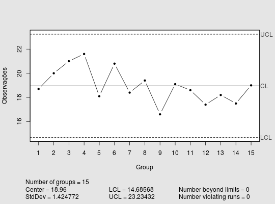
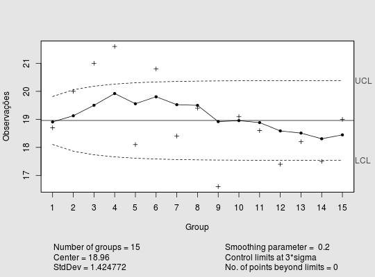

Uma característica de qualidade de um processo monitorada por meio de quinze observações.
Um data.frame com 15 observações e 1 variável, em que
xCOSTA et al. (2010), pág. 198.
data(EpprechtTb7.5)#> Warning: data set ‘EpprechtTb7.5’ not foundstr(EpprechtTb7.5)#> 'data.frame': 15 obs. of 1 variable: #> $ x: num 18.7 20 21 21.6 18.1 20.8 18.4 19.4 16.6 19.1 ...library(qcc) qcc(EpprechtTb7.5, type = "xbar.one", nsigmas = 3, xblab = "", ylab = "Observações", title = "")#> List of 11 #> $ call : language qcc(data = EpprechtTb7.5, type = "xbar.one", nsigmas = 3, xblab = "", ylab = "Observações", title = "") #> $ type : chr "xbar.one" #> $ data.name : chr "EpprechtTb7.5" #> $ data : num [1:15, 1] 18.7 20 21 21.6 18.1 20.8 18.4 19.4 16.6 19.1 ... #> ..- attr(*, "dimnames")=List of 2 #> $ statistics: Named num [1:15] 18.7 20 21 21.6 18.1 20.8 18.4 19.4 16.6 19.1 ... #> ..- attr(*, "names")= chr [1:15] "1" "2" "3" "4" ... #> $ sizes : int [1:15] 1 1 1 1 1 1 1 1 1 1 ... #> $ center : num 19 #> $ std.dev : num 1.42 #> $ nsigmas : num 3 #> $ limits : num [1, 1:2] 14.7 23.2 #> ..- attr(*, "dimnames")=List of 2 #> $ violations:List of 2 #> - attr(*, "class")= chr "qcc"ewma(EpprechtTb7.5, nsigmas = 3,plot = TRUE, xblab = "", ylab = "Observações", title = "")#> List of 15 #> $ call : language ewma(data = EpprechtTb7.5, nsigmas = 3, plot = TRUE, xblab = "", ylab = "Observações", title = "") #> $ type : chr "ewma" #> $ data.name : chr "EpprechtTb7.5" #> $ data : num [1:15, 1] 18.7 20 21 21.6 18.1 20.8 18.4 19.4 16.6 19.1 ... #> ..- attr(*, "dimnames")=List of 2 #> $ statistics: Named num [1:15] 18.7 20 21 21.6 18.1 20.8 18.4 19.4 16.6 19.1 ... #> ..- attr(*, "names")= chr [1:15] "1" "2" "3" "4" ... #> $ sizes : int [1:15] 1 1 1 1 1 1 1 1 1 1 ... #> $ center : num 19 #> $ std.dev : num 1.42 #> $ x : int [1:15] 1 2 3 4 5 6 7 8 9 10 ... #> $ y : Named num [1:15] 18.9 19.1 19.5 19.9 19.6 ... #> ..- attr(*, "names")= chr [1:15] "1" "2" "3" "4" ... #> $ sigma : num [1:15] 0.285 0.365 0.408 0.433 0.449 ... #> $ lambda : num 0.2 #> $ nsigmas : num 3 #> $ limits : num [1:15, 1:2] 18.1 17.9 17.7 17.7 17.6 ... #> ..- attr(*, "dimnames")=List of 2 #> $ violations: Named int(0) #> ..- attr(*, "names")= chr(0) #> - attr(*, "class")= chr "ewma.qcc"